01
Proaction 报告采用 OpenAI 工具后的销售与时间收益
OpenAI 客户案例称 Proaction 借助 Codex 等工具实现销售增长 60%、节省超过 75 小时。采集摘要未披露测量周期或各工具的独立贡献。
每天一次，过滤 AI 噪音
OpenAI 客户案例称 Proaction 借助 Codex 等工具实现销售增长 60%、节省超过 75 小时。采集摘要未披露测量周期或各工具的独立贡献。
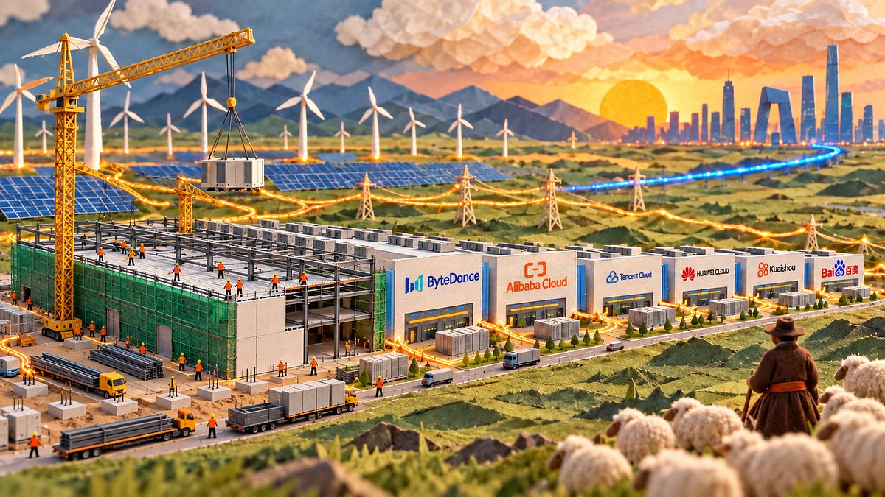
SemiAnalysis 模型覆盖逾 1,000 处设施与 60 多家运营商，讨论基础设施向 AI 转移及算力租赁集中度。采集摘要未包含底层数据和完整方法。
9 月 23 日案例称 invideo 借助 GPT-6 Astra 改善剪辑规划，色彩校正与调色提升三倍，并在一天内制作 50 个定制特效；摘要未给出评测方法。
Recurse 将编程技能与无服务器运行时结合，让智能体根据明确的输入输出与评估标准迭代提示词和 Python 工具。系统已可运行，但部分示例文档仍未完成。
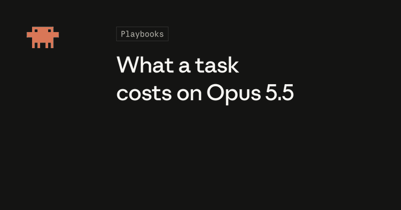
官方称 Opus 5.5 输入输出 token 价格较 Opus 5 低 20%，缓存读取低 60%，并提供任务成本计算器。实际任务节省幅度仍取决于用量。
Runway 宣布通过 MCP 在 Claude 内调用多种图像和视频模型，包括 Gen-4.5、Seedance 2.5、GPT Image 2 和 Kling。
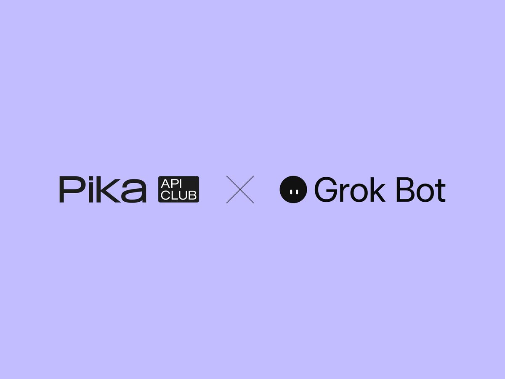
Pika 9 月 24 日称 Grok Bots 可通过其 API 调用超过 120 个图像、视频与音频模型；公告未提供逐模型定价或性能比较。
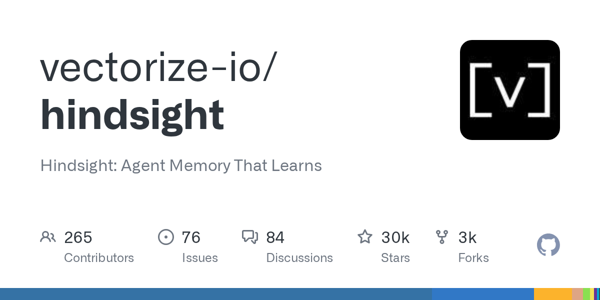
Hindsight 是描述为“可学习智能体记忆”的 Python 项目，采集时记录 29,789 星，最近提交在报告日。快照不足以证明新版本发布或实际效果。
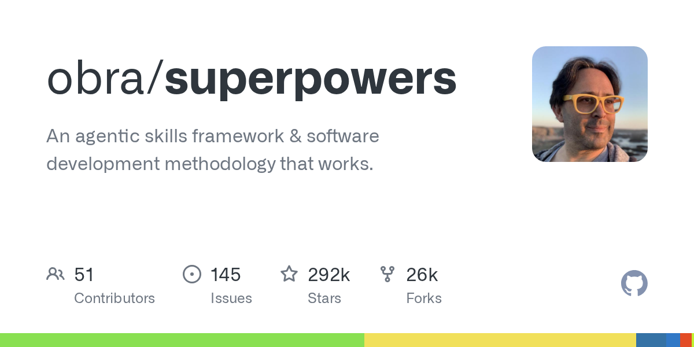
Superpowers 是智能体技能框架与软件开发方法项目，采集记录 291,662 星及报告日提交。此条用于项目发现，不代表独立验证的生产率提升。
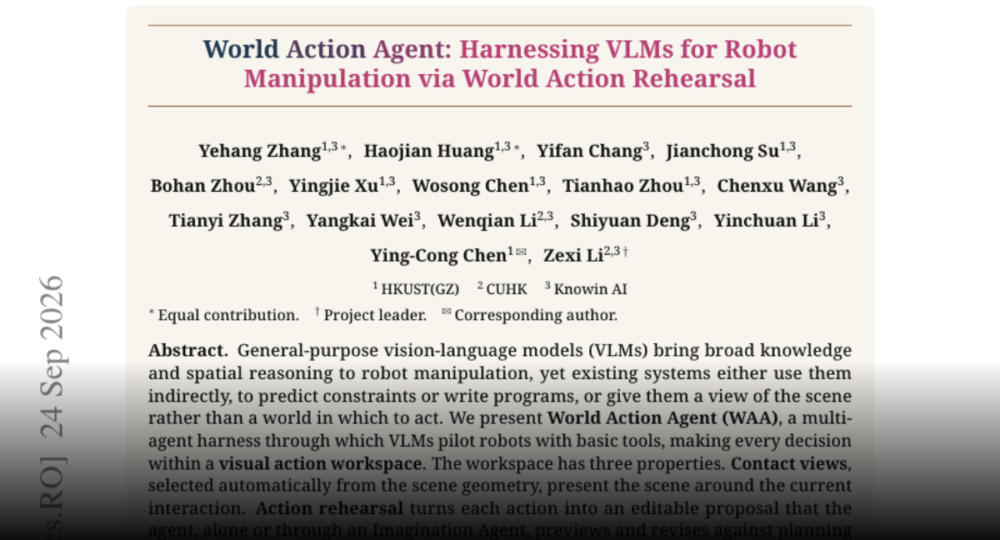
World Action Agent 结合接触视图、动作预演和执行纠偏，并从视频与人工教学中形成技能。作者报告 LIBERO-Pro 平均成功率为 75.6%。
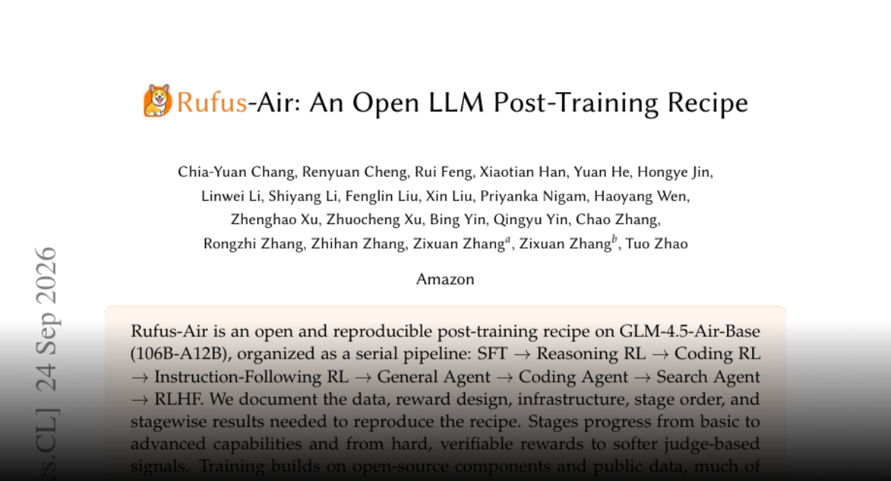
Rufus-Air 面向 GLM-4.5-Air-Base 公开八阶段后训练流程，披露数据、奖励、基础设施与阶段结果，强调奖励可靠性和难度筛选。
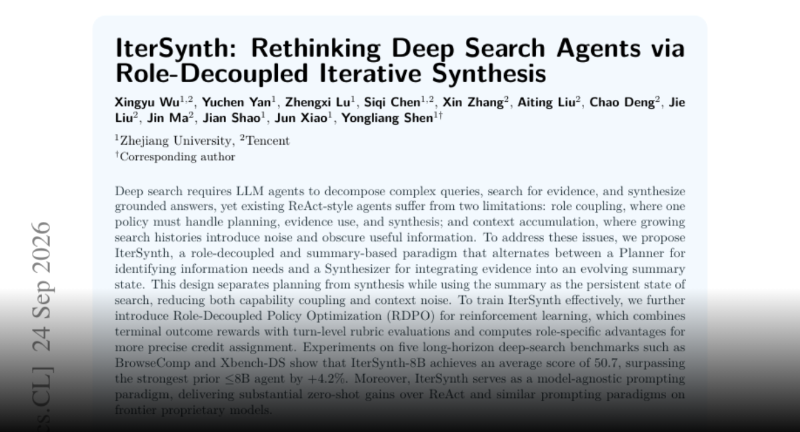
IterSynth 通过规划器与综合器分工，用滚动摘要保存搜索状态，并用角色专属强化学习信号训练。作者报告 8B 模型在五项基准上平均得分 50.7。
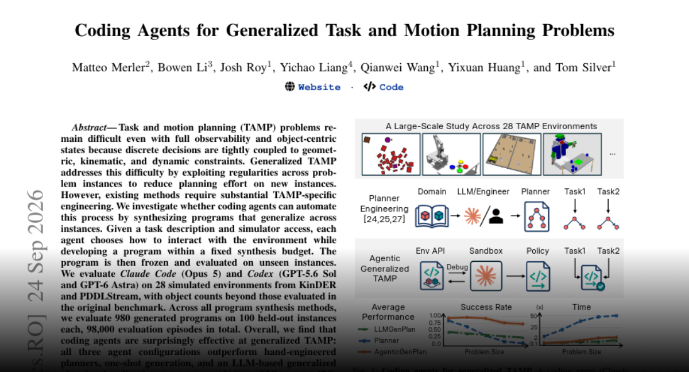
研究让编程智能体利用模拟器合成规划程序，再冻结程序测试未见实例。评测覆盖 28 个模拟环境与 98,000 次运行，结果显示其可作为通用任务与运动规划的强基线。
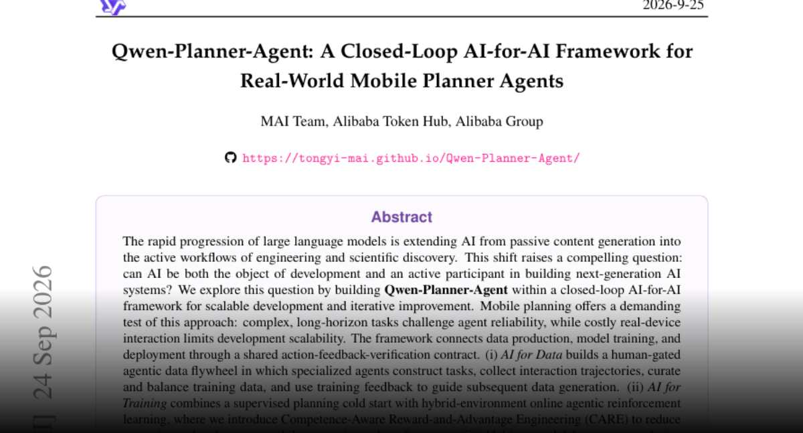
Qwen-Planner-Agent 联通数据、训练和部署，结合人工把关的数据循环与在线强化学习；CARE 旨在降低推理和工具成本。作者报告 MobilePA-Bench 评测中的领先结果。
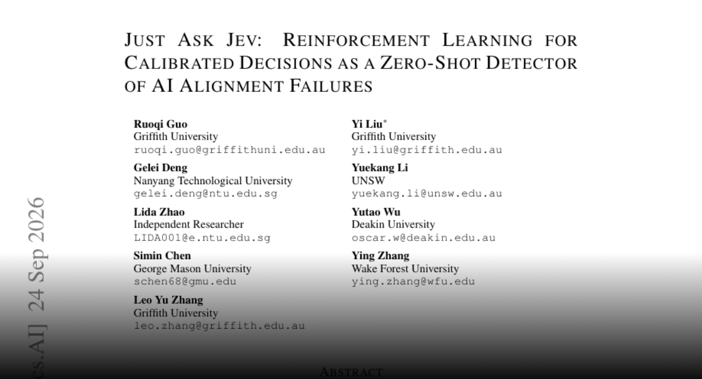
研究在 44 项基准和五个目标模型上评估 Jev 对十类对齐失败的检测。作者报告零样本 AUROC 中位数为 0.886，输入上下文比问题措辞更重要。
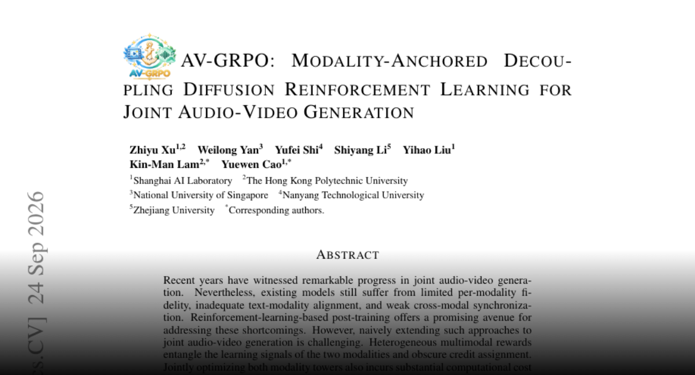
AV-GRPO 通过模态锚定、冻结分支优化与自适应目标改善音视频奖励归因，并提出 5DAV 数据集。作者报告质量、语义对齐与同步性改进。
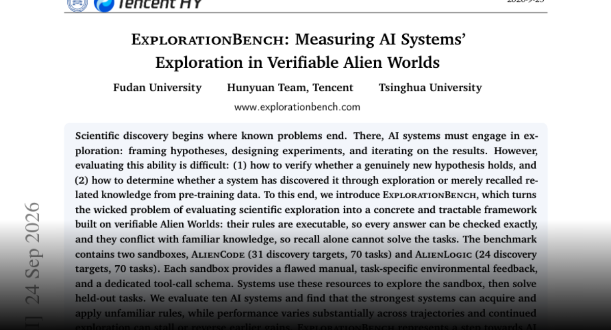
ExplorationBench 通过规则可执行且违背常识的陌生世界测试探索能力。两个沙箱各含 70 个任务；十个系统的评测显示，更多探索不一定带来持续提升。
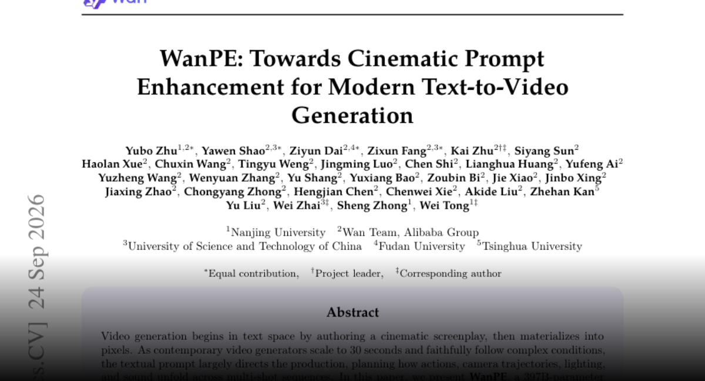
WanPE 是以 105 万段视频训练的 397B 提示词增强模型，结合反向构造与强化学习保持跨镜头语义一致性，作者报告在 Wan3.0 上的人类偏好提升。
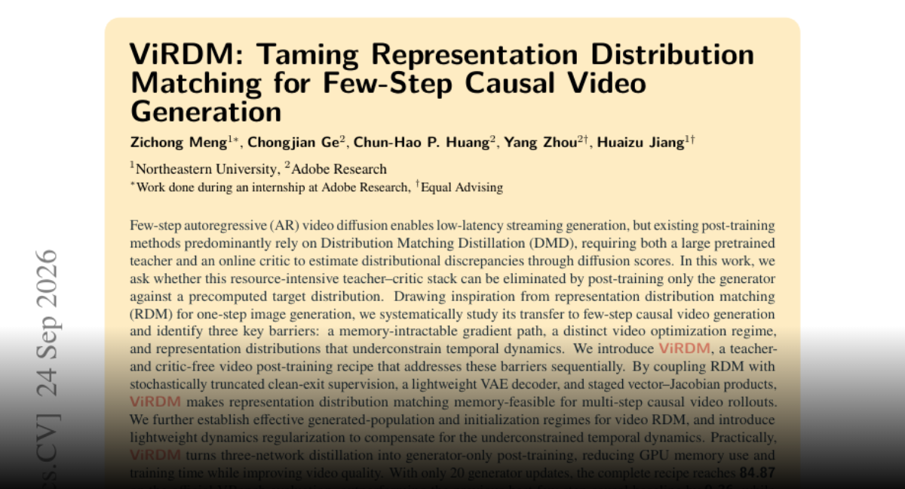
ViRDM 使用预计算表示分布进行仅生成器后训练，省去教师与判别式评估网络。作者报告 20 次更新、16 A100 GPU 小时后取得 VBench 84.87 分。
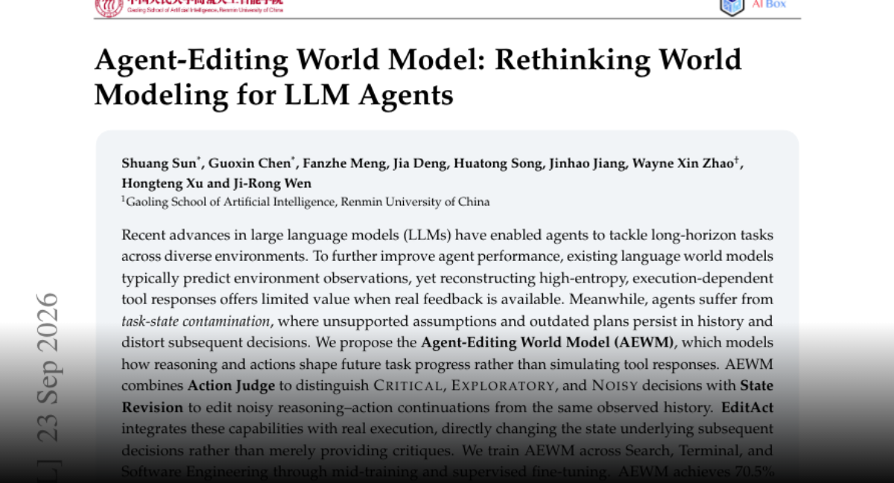
该方法通过动作判断与状态修订清除历史中的无依据假设和过时计划。作者报告 EditAct 在六项基准、三个骨干模型上较最强基线平均提升 3.2 至 6.7 分。